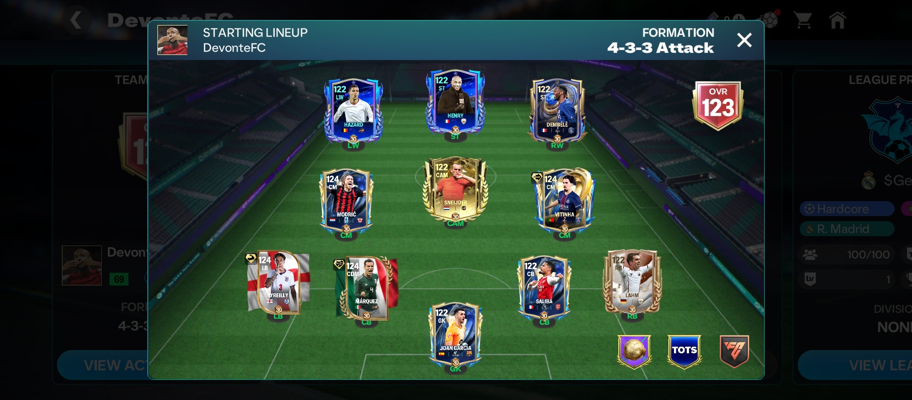
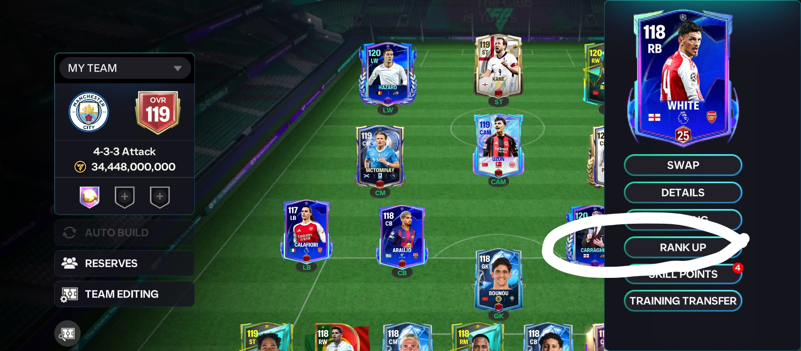
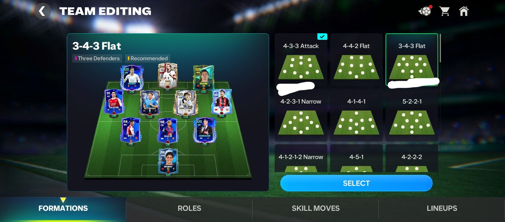
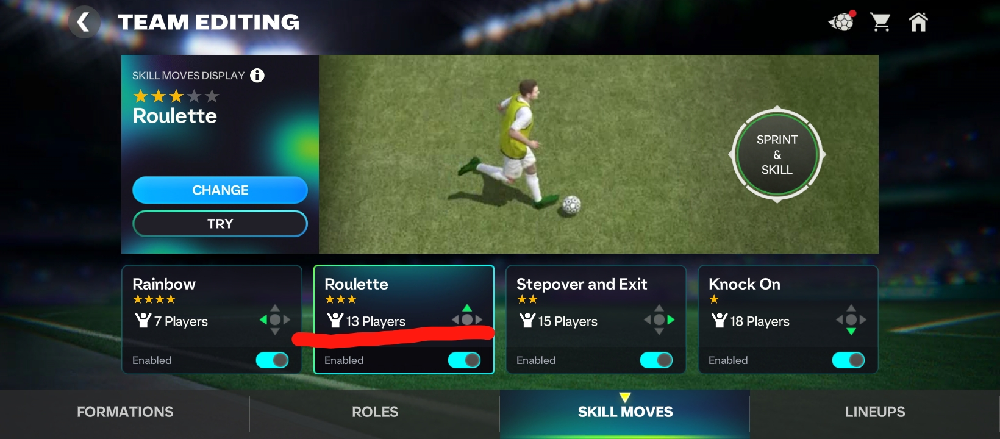
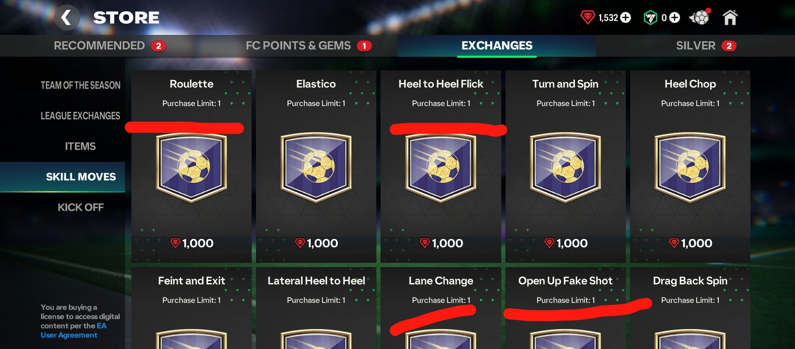

Here is a professional, high-level guide to FC Mobile. Learn how to reach peak levels in Division Rivals, VS Attack, and Manager Mode.
Winning consistently in FC Mobile requires a strong squad with at least three 117 OVR players to reach Legendary.
1.SQUAD BUILDING
First rule as an FC Mobile player when building a top squad is not to focus too much on the market, because prices can be very high. If you're considering buying players from the market, always look for Blue (Rank 3) or Purple (Rank 4) versions, so upgrading to a higher rank will be easier.

2.RANKING UP PLAYERS
Some users make the mistake of spending over 1,000 rank-up points on a particular player, which is not a good strategy because your team may become too dependent on that highly ranked player.
What should you do? Rank up each player equally to maintain a balanced squad rating. Believe me, you'll have a better chance of beating opponents in FC Champion.

3.BEST FORMATIONS
The best way to choose the perfect formation is by understanding your squad depth and the ratings of your players. The formations below are some of the best in the game.
• 3-4-3: This is one of the best formations for a balanced attacking and defensive system. Your RM and LM players usually make overlapping runs and can also serve as fullbacks during defence, helping your team form a solid back five. The only limitation of this formation is that teams with a very high OVR get the maximum benefit because you need a solid, high-rated CB.
• 4-3-3: This formation fits almost every team because of the way the AI handles it. It is one of the best formations for a possession-based team.

4.TACTICS & STYLE OF PLAY
To reach the highest level in FC Mobile, your team should play a possession-based style, especially when coming up against difficult opposition. This gives you a higher chance of winning.
Power shots are also very effective when playing against low-block teams, and you have a higher chance of scoring with high-rated players. Later in this lesson, we will learn how to perform a power shot.
5.HOW TO CARRY OUT SKILLS IN FC Mobile
>• The Roulette: Tap the Sprint & Skill button quickly. Use it when being pressed by a full-back.
• The Heel-to-Heel Flick: Swipe the Sprint & Skill button upward. Use it when sprinting at the edge of the box against a defender.
<
• The Lane Change: Swipe the Sprint & Skill button left or right. Use it at the edge of the penalty area when a defender rushes out to block you.


• Fake Shot: Swipe the Shot button to the right.
Let go of Sprint before triggering a skill move. You will thank me later.
• Go to Settings → Gameplay → Contextual Strafe Dribbling (turn ON). This makes your player keep the ball closer to their feet and shield it while dribbling.
• It activates when your player is very close to a defender or opposing player.
You Need More PRO Tips? 🔥
• Sign up for MOONIFY™ today!
• Experience live lessons from our specialists around the world!